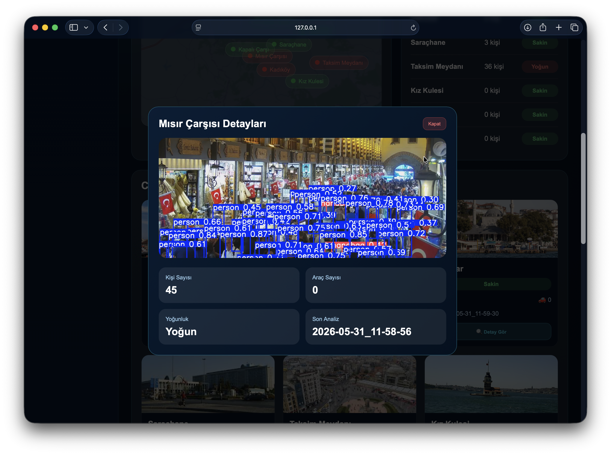
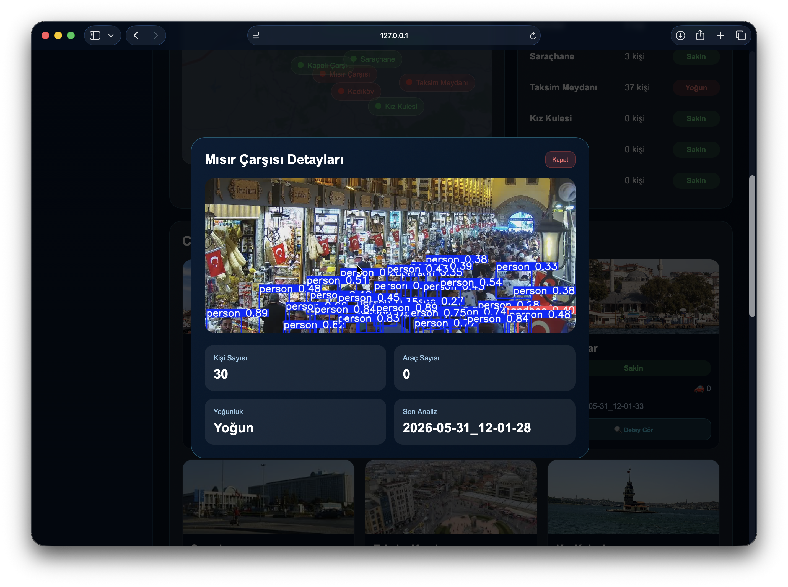
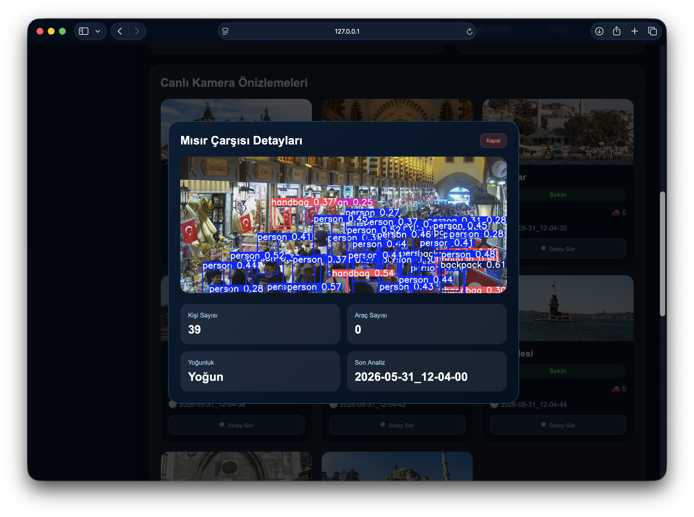
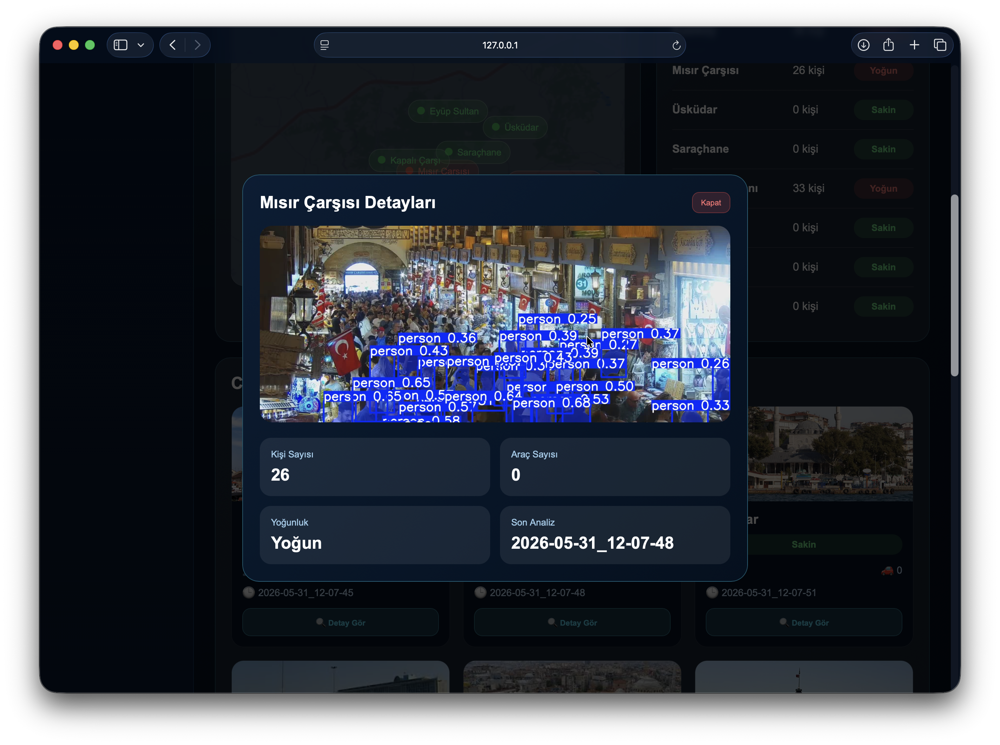
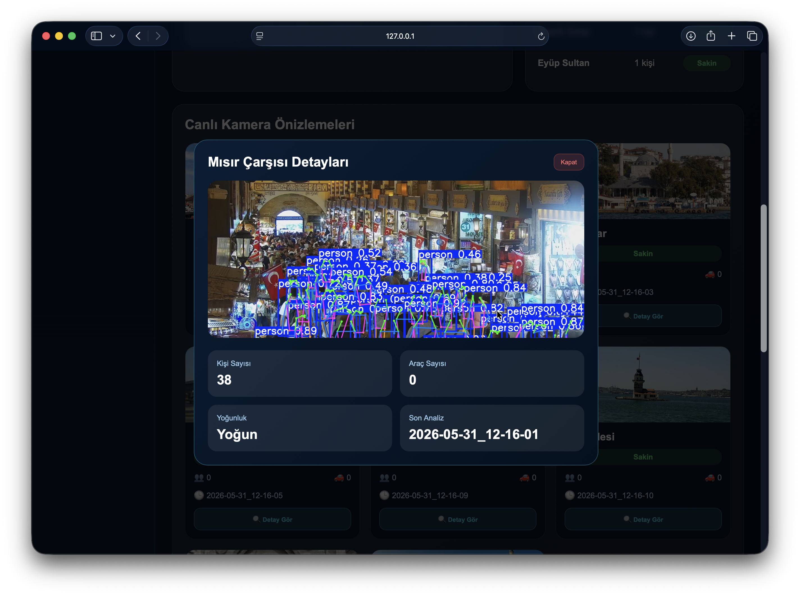
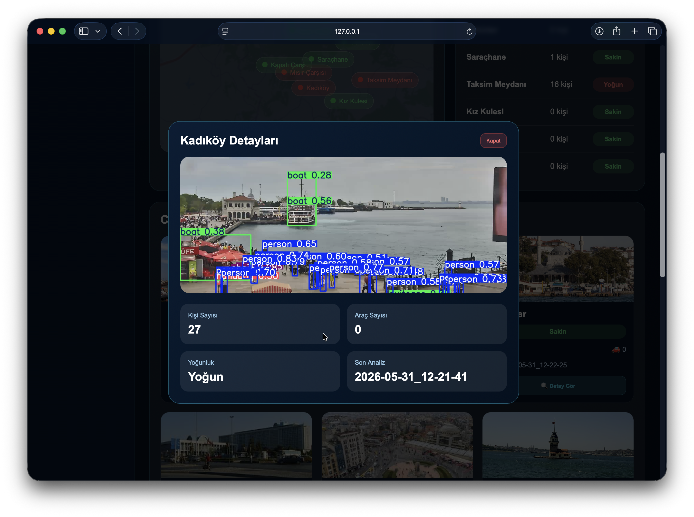

IstanbulVision AI
Yapay zekâ destekli canlı yoğunluk analiz sistemi
0
0
0
-
3 DK
Supabase
-
-
Canlı Kamera Haritası
Kamera Yoğunluk Durumu
Canlı Kamera Önizlemeleri
Son 5 Analiz Kaydı
Rapor Özeti
IstanbulVision AI; YOLO26n modeli, FastAPI REST API servisi ve Supabase bulut veritabanı desteği ile şehir kameralarından alınan görüntüleri analiz ederek kişi sayısı, araç sayısı ve yoğunluk durumunu kullanıcıya sunan yapay zekâ destekli bir akıllı şehir yoğunluk analiz sistemidir.
📈 Yoğunluk Tahmini
Sistem geçmiş analiz verilerini kullanarak belirli saatlerde hangi konumların yoğun olabileceğini tahmin eder.
🤖 YOLO Model Karşılaştırması
Bu bölümde aynı kamera görüntüleri farklı yapay zekâ modelleri ile test edilmiştir. Amaç, kişi/araç tespitinde hangi modelin daha dengeli sonuç verdiğini gözlemlemektir.

YOLO11s
Tür: Nesne Tespiti
Sonuç: 45 kişi
Hızlı çalışır ancak kalabalık sahnelerde fazla tespit yapabilir.

YOLO11m
Tür: Nesne Tespiti
Sonuç: 30 kişi
Hız ve doğruluk açısından daha dengeli sonuç vermiştir.

RT-DETR-L
Tür: Transformer Tabanlı Tespit
Sonuç: 39 kişi
YOLO dışı farklı mimari olarak karşılaştırmaya eklenmiştir.

YOLO11s-Seg
Tür: Segmentasyon
Nesneleri yalnızca kutu içine almak yerine alan bazlı gösterir.

YOLO11l-Pose
Tür: Pose Detection
İnsanların iskelet noktalarını çıkararak yaya davranışı analizi sağlar.

YOLO12l
Tür: Attention Tabanlı Yeni Nesil Model
Yeni mimari yapısı nedeniyle raporda karşılaştırmalı model olarak kullanılmıştır.
Ayarlar
Analiz aralığı 3 dakika olarak ayarlanmıştır. Sistem verileri FastAPI üzerinden alır ve dashboard üzerinde gösterir.